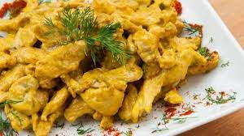
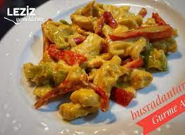

Köri Soslu Tavuk

Körili Tavuk
Malzemler
- 3 adet yeşil biber.
- 2 adet kapya biber
- 3 adet tavuk göğsü
- 3 yemek kaşığı sıvı yağ
- 2 diş sarımsak
- 1 tatlı kaşığı tuz
- 1 çay kaşığı toz şeker
- 1 çay kaşığı karabiber
- 1 paket sıvı krema
- 5 tatlı kaşığı köri baharat
Tarif
- Tavuklar ince ince doğranır.
- 3 yemek kaşığı sıvı yağ tencereye atılır ve kızasıya kadar beklenir.
- Yağ kızınca tavuklar atılır. Tavuklarsuyunu salınca içine biberler ilave edilir.
- Biberler pişmeye başalayınca baharatlar eklenir.
- Tavuk ve biberler olunca üzerine krema eklenir.
- ve üzerine köri sosu atılıp kısık ateşte karıştırılır.

AFİYET OLSUN....